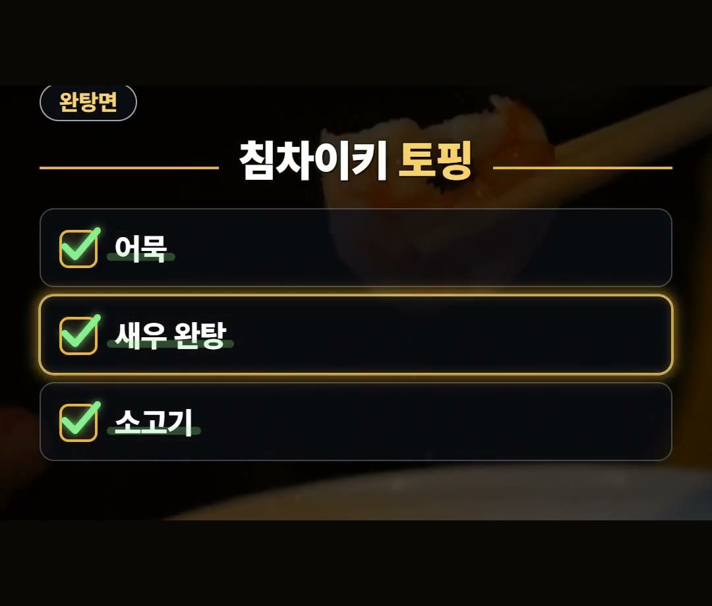
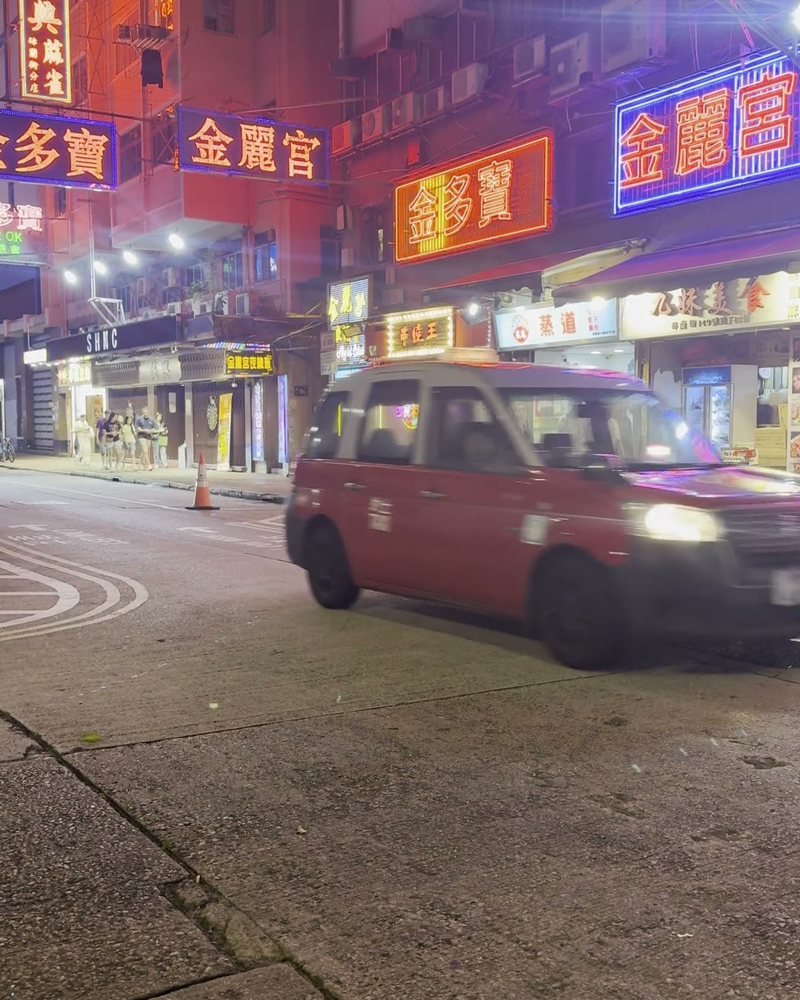
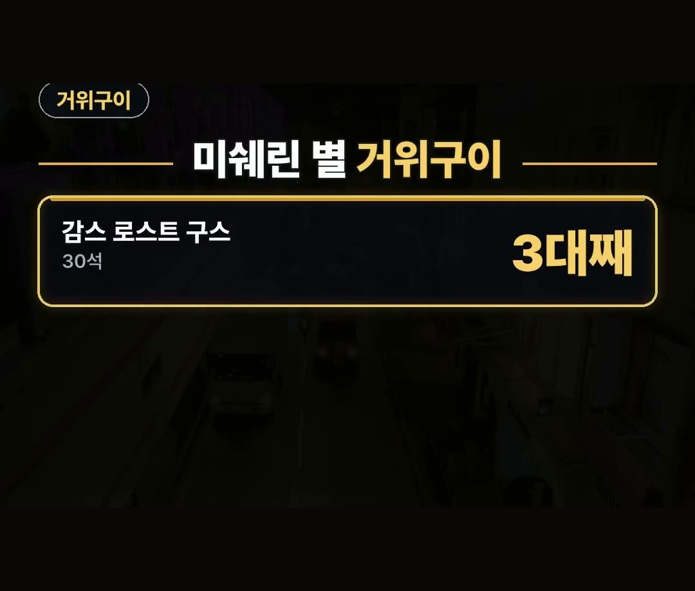
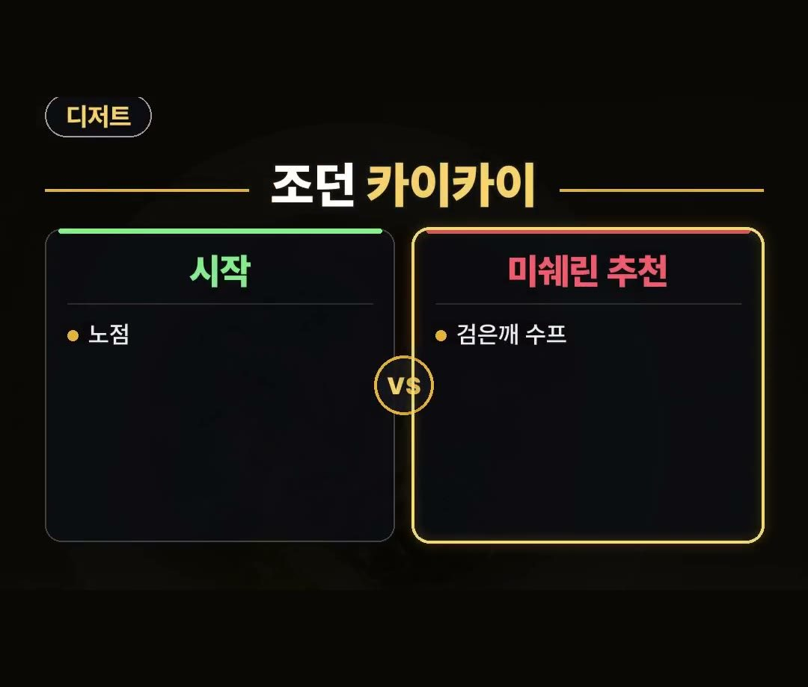

홍콩 맛집, 미쉐린이 고른 완탕면·거위구이·디저트집 세 곳
※ 이 글에는 제휴 링크가 포함되어 있으며, 링크를 통해 예약·구매하시면 일정 수수료를 받을 수 있습니다. (가격은 같습니다)
※ 이 포스팅은 쿠팡 파트너스 활동의 일환으로, 이에 따른 일정액의 수수료를 제공받습니다.
홍콩 맛집을 찾다가 「미쉐린은 비싼 곳만 있겠지」 하고 그냥 넘기지 않으셨나요?
미쉐린 가이드 홍콩판에는 길거리 음식과 국숫집도 올라 있어요.
비싼 곳만 찾다 보면 이런 집을 놓치기 쉽습니다.
이 글에서는 미쉐린 가이드 홍콩판에 오른 완탕면집, 거위구이집, 디저트집 세 곳과 줄을 피하는 요령, 이동할 때 쓰는 카드까지 2026년 10월 기준으로 정리했어요.
미쉐린 가이드 홍콩판에는 길거리 음식과 국숫집도 오르고, 「현지인처럼 먹기」 표시까지 붙는다는 걸 기억하세요!
점심에는 줄이 길 수 있으니 바쁜 시간을 피하는 게 유리해요. 🍜

홍콩 맛집 미슐랭 가이드, 비싼 곳만 있는 게 아니에요
미쉐린 가이드라고 하면 값비싼 코스 요리부터 떠올리기 쉽죠.
그런데 홍콩판에는 길거리 음식과 국숫집도 올라 있어요.
여기에 「현지인처럼 먹기」 표시가 붙은 가게도 있습니다.
여행 중에 현지 사람들 사이에서 한 끼를 먹어 보고 싶다면 이 표시를 눈여겨보세요.
아래 세 곳은 모두 미쉐린 가이드 홍콩판에 오른 곳이에요.
- 센트럴 침차이키 — 빕 구르망 완탕면집
- 완차이 감스 로스트 구스 — 미쉐린 별을 받은 거위구이집
- 조던 카이카이 — 빕 구르망 디저트집
센트럴 침차이키 — 토핑 3가지 완탕면과 점심 줄
센트럴의 침차이키는 빕 구르망에 오른 완탕면집이에요.
토핑은 3가지뿐입니다.
- 어묵
- 새우 완탕
- 소고기
미쉐린 소개에는 토핑을 둘이나 셋 섞어서 고를 수도 있다고 나와 있어요.
메뉴가 단출해서 처음 가도 고르기 어렵지 않습니다.

침차이키는 점심에 줄이 길고, 붐비면 모르는 사람과 합석하게 돼요.
그래서 바쁜 시간을 피해서 가는 게 유리합니다.
- 점심에는 줄이 길어요
- 붐비면 합석해요
- 바쁜 시간을 피해서 가기
미쉐린 소개에는 줄이 긴 까닭으로 탱탱한 면과 맛있는 국물을 꼽고 있어요.
일정 안에 맛집 여러 곳을 넣었다면, 줄이 긴 집은 점심 한가운데를 비켜서 순서를 짜 보세요.

완차이 감스 로스트 구스 — 미쉐린 별 거위구이
완차이의 감스 로스트 구스는 미쉐린 별을 받은 거위구이집이에요.
- 3대째가 문을 연 가게
- 좌석 30석
이 가게의 미쉐린 소개에는 「줄 설 만한 곳」, 「현지인처럼 먹기」 표시가 함께 붙어 있어요.
좌석이 30석뿐이라 줄을 각오하고 가는 게 좋아요.
기다리는 시간까지 일정에 넣어 두면 마음이 편합니다.

조던 카이카이 — 노점에서 시작한 디저트집
조던의 카이카이는 노점에서 시작한 빕 구르망 디저트집이에요.
미쉐린은 이곳의 검은깨 수프를 권합니다.
은행과 율무를 넣은 두부피 수프도 같이 권하고 있어요.
식사를 마친 뒤 달달한 디저트로 하루를 마무리하고 싶다면 홍콩 맛집 리스트에 카이카이를 넣어 보세요.

홍콩 맛집 리스트 돌 때, 이동은 카드 한 장으로
센트럴, 완차이, 조던처럼 동네를 옮겨 다닐 때는 홍콩 옥토퍼스 카드 한 장으로 지하철과 트램을 탈 수 있어요.
옥토퍼스 공식 안내를 보면 버스와 페리에서도 쓸 수 있습니다.
가게 위치를 찾고 길을 확인하려면 데이터가 있어야 하니, 이심은 출발 전에 미리 준비해 두세요.
정리
- 미쉐린 가이드 홍콩판에는 길거리 음식과 국숫집도 오르고, 「현지인처럼 먹기」 표시도 붙어요.
- 센트럴 침차이키(토핑 3가지 완탕면), 완차이 감스 로스트 구스(미쉐린 별 거위구이·좌석 30석), 조던 카이카이(검은깨 수프)를 기억하세요.
- 점심에는 줄이 길고 붐비면 합석하니 바쁜 시간을 피하고, 이동은 홍콩 옥토퍼스 카드 한 장으로 지하철과 트램을 타요.
여러분은 세 곳 가운데 어디부터 가 보고 싶으세요?
예약 링크는 아래에 모아 두었어요.
지금 쓸 수 있는 여행사 할인
- 📶 해외 데이터는 이심으로 미리 준비하세요 (마이리얼트립 마이심)
※ 여행사 사정으로 조건이 바뀌거나 일찍 끝날 수 있어요. 예약 전에 여행사 화면에서 한 번 더 확인하세요. (2026-10-05 확인)
📘 무료 여행 가이드 전자책 모음 보기 (오사카 · 후쿠오카 · 타이베이 · 도쿄 · 일본겨울) ›
📌 2026년 10월 기준 정보예요. 가격은 환율·시기에 따라 달라질 수 있어요.
영상 화면: Pexels (Allen Boguslavsky, David Lomax, Leon Bastian, Nelemson G, Nirjhar Basak, RDNE Stock project)
사진: Pexels (P. Ho)
사진: Pixabay (stokpic)